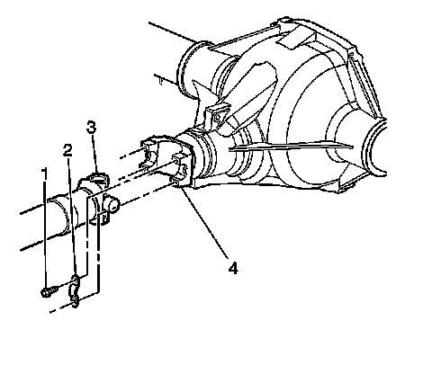
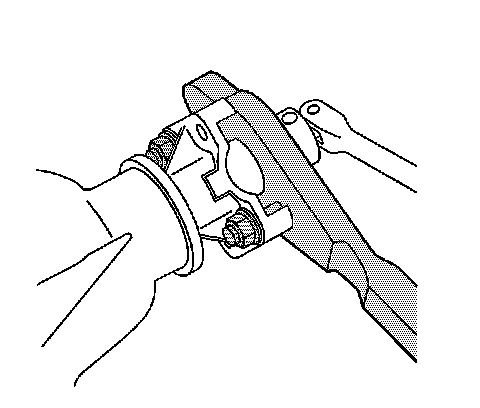
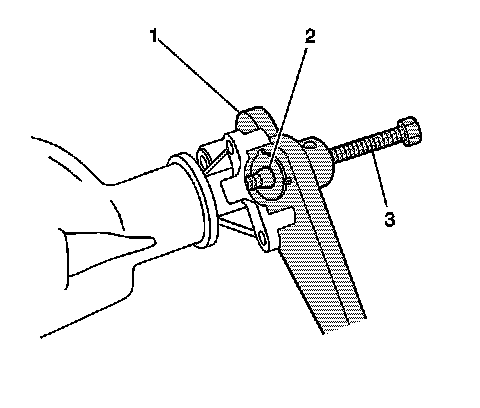
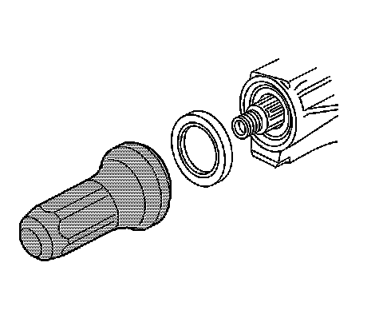

Rear Drive Axle
Drive Pinion Flange/Yoke and/or Oil Seal Replacement
Tools Required
^ J 8614-01 Flange and Pulley Holding Tool
^ J 22388 Pinion Oil Seal Installer - Rear
Removal Procedure
Important: Observe and mark the positions of all the driveline components, relative to the propeller shaft and the axles, prior to disassembly. These components include the propeller shafts, drive axles, pinion flanges, output shafts, etc. Reassemble all the components in the exact places in which you removed the parts. Follow any specifications, torque values, and any measurements made prior to disassembly.
1. Raise and support the vehicle. Refer to Lifting and Jacking the Vehicle.
2. Drain the drive axle. Refer to Rear Axle Lubricant Replacement.
3. Remove the tires and wheels (8.6 inch, 9.5 inch axle).
4. Remove the rear brake calipers (8.6 inch, 9.5 inch axle).
5. Remove the brake rotors (8.6 inch, 9.5 inch axle).

6. Reference mark the rear propeller shaft (3) to the rear axle pinion yoke (4).
7. Disconnect the propeller shaft from the axle. Wrap the bearing caps with tape in order to prevent the loss of bearing rollers. Support the propeller shaft as necessary.

8. Measure the amount of torque required to rotate the pinion. Use an inch-pound torque wrench. Record this measurement for reassembly. This will give the combined preload for the following components:
^ The pinion bearings
^ The pinion oil seal
^ The differential case bearings
^ The axle bearing (8.6 inch, 9.5 inch axles)

9. Place an alignment mark between the pinion and the pinion yoke.

10. Install the J 8614-01 as shown.
11. Remove the pinion nut while holding the J 8614-01.
12. Remove the washer.

13. Install the J 8614-2 (2) and J 8614-3 (3) into the J 8614-01 (1) as shown.
14. Remove the pinion yoke by turning the J 8614-3 (3) clockwise in order to retrieve the lubricant.
15. Remove the pinion oil seal. Use a suitable seal removal tool.
Installation Procedure

1. Install a new pinion oil seal using the J 22388.
2. Apply sealant, GM P/N 12346004 (Canadian P/N 10953480) or equivalent, to the splines of the pinion yoke.
3. Install the pinion yoke. Align the marks made during removal.
Notice: Refer to Pinion Flange/Yoke Installation Notice.
4. Seat the pinion yoke onto the pinion shaft by tapping it with a soft faced hammer until a few pinion shaft threads show through the yoke.
5. Install the washer and a new pinion nut.
6. Install the J 8614-01 onto the pinion yoke as shown.
Notice: Refer to Fastener Notice.
Important: If the rotating torque is exceeded, the pinion will have to be removed and a new collapsible spacer installed.
7. Tighten the pinion nut while holding the J 8614-01.
Tighten the nut until the pinion end play is just taken up. Rotate the pinion while tightening the nut to seat the bearings.
8. Measure the rotating torque of the pinion. Compare this measurement with the rotating torque recorded during removal.
Tighten the nut in small increments, as needed, until the rotating torque is 0.40-0.57 N.m (3-5 lb in) greater than the rotating torque recorded during removal.
9. Once the specified torque is obtained, rotate the pinion several times to ensure the bearings have seated. Recheck the rotating torque and adjust if necessary.
10. Install the propeller shaft (3) to the pinion yoke (4). Align the reference marks made during removal.
11. Install the propeller shaft yoke retaining clamp bolts.
Tighten the propeller shaft yoke retaining clamp bolts to 25 N.m (18 lb ft).
12. Install the brake rotors (8.6 inch, 9.5 inch axles).
13. Install the brake calipers (8.6 inch, 9.5 inch axles).
14. Install the tire and wheel.
15. Fill the drive axle. Refer to Rear Axle Lubricant Replacement.
16. Inspect and add axle lubricant to the axle housing, if necessary.
17. Lower the vehicle.